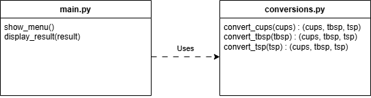

When solving a problem, break it up into parts. How will you calculate something? How will you read information from the user? How many different scenarios do you need to handle?
In software, we want to take the individual parts and place them in separate functions and separate files. Separate functions provide the ability for reuse.
In Python, if you put a function in a different file, you need to import that function when you call it. The format is:
from file_name import function_name # Don't include the .py
Benefits:
In this example, we will create a tool to convert measurements in cups, tablespoons, and teaspoons. Our goal is to implement the following function diagram:

Copy the following code into a file called main.py:
choice = None
while choice != "4":
print("1) Convert cups")
print("2) Convert tablespoons")
print("3) Convert teaspoons")
print("4) Quit")
choice = input("> ")
if choice == "1":
cups = float(input("Enter the number of cups: "))
elif choice == "2":
tbsp = float(input("Enter the number of tablespoons: "))
elif choice == "3":
tsp = float(input("Enter the number of teaspoons: "))
Convert the code in main.py into a function called show_menu. Call the show_menu function. Run the program.
Create functions convert_cups, convert_tbsp, and convert_tsp into a file conversions.py. Each function should return a tuple (cups, tbsp, tsp).
Call the convert functions written in conversions.py. Remember to use the import statements. Run the main.py program.
Create a function called display_results that will take the (cups, tbsp, tsp) into the format: Cups: #.## Tablespoons: #.## Teaspoons: #.##. Run the main.py program.
How will modularity and problem decomposition affect your personal project this semester?